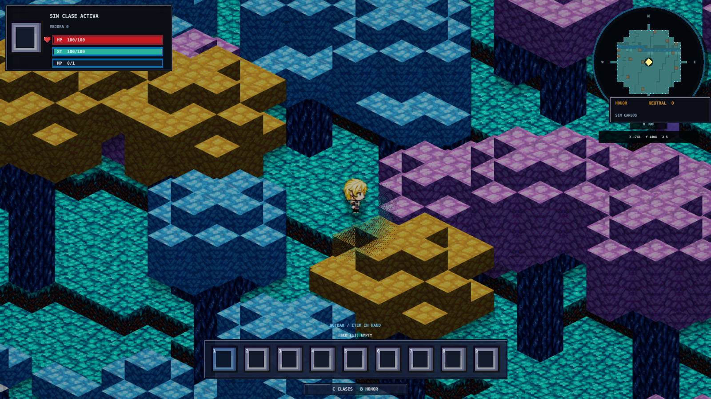
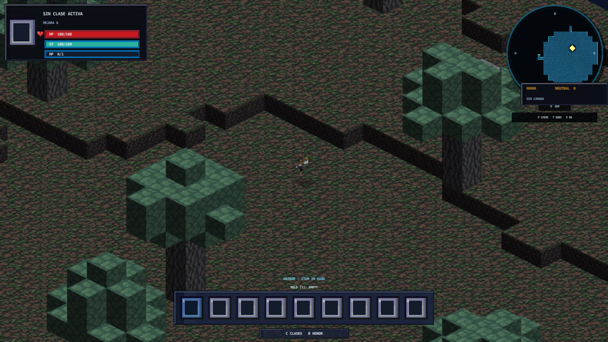
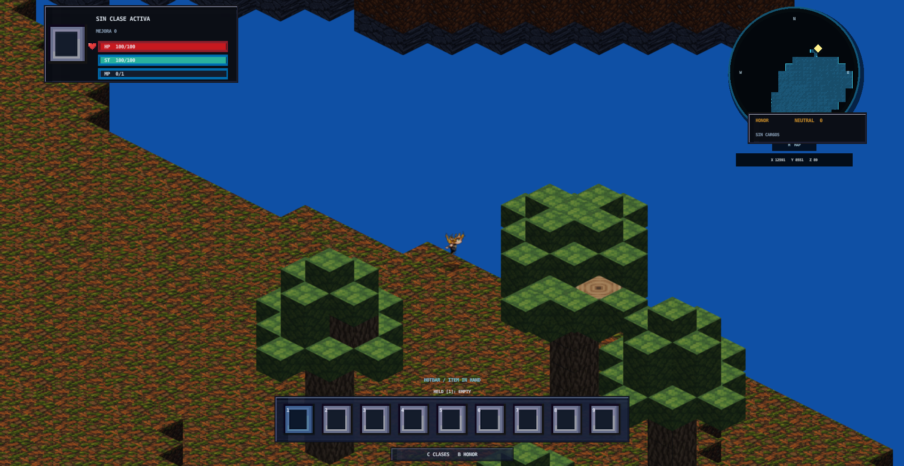

01 / WORLDGEN
Mundos con lógica propia
Exploramos generación por semillas, biomas, geografía y sistemas que relacionan el paisaje con lo que sucede dentro de él.
En The Fiven Or Community exploramos cómo la tecnología y la imaginación pueden dar vida a mundos de juego abiertos, sorprendentes y llenos de posibilidades.

The Fiven Or Community es una iniciativa de desarrollo de videojuegos que combina experimentación técnica, diseño de sistemas y pasión por la exploración. Avanzamos mediante prototipos, pruebas y mejoras continuas.
Estamos desarrollando un juego original que combina la libertad de un sandbox con sistemas de rol y un mundo generado a partir de semillas. Terrenos, cuevas, biomas y la interacción con el entorno son parte central de nuestra visión.
Las imágenes muestran pruebas reales del prototipo, no una versión final ni una promesa de que todos los sistemas diseñados estén completos.

Sin imágenes generadas para anunciar funciones inexistentes: estas son capturas del desarrollo y las pruebas del juego.

Material de desarrollo. La apariencia y los sistemas del juego pueden cambiar.
Exploramos generación por semillas, biomas, geografía y sistemas que relacionan el paisaje con lo que sucede dentro de él.
Superficie, cuevas, subsuelo y variaciones de altura forman parte de nuestros objetivos de exploración y construcción.
Diseñamos mecánicas de interacción, progresión y transformación del entorno, validándolas poco a poco en el prototipo.
Preferimos mostrar el trabajo real: avances técnicos, experimentos visuales y sistemas que aún requieren pulido. Cada iteración nos acerca a un juego más coherente y disfrutable.
¿Te interesa el estudio, nuestro proyecto o una posible colaboración? Puedes escribirnos directamente.